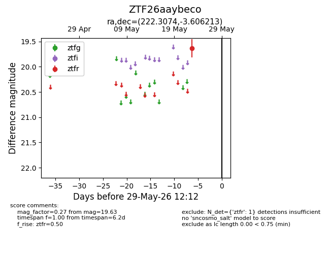
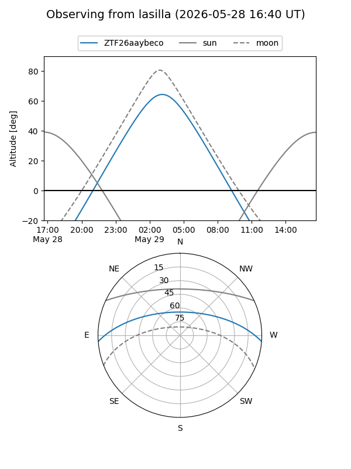
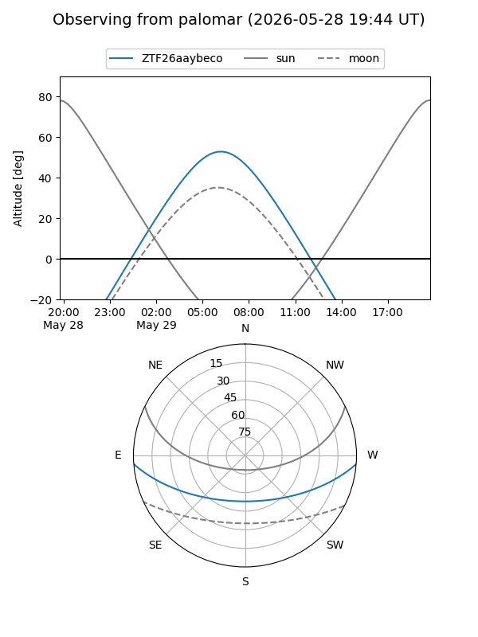

ZTF26aaybeco
Target ZTF26aaybeco at 2026-05-29 12:16
Aliases and brokers:
lsst-FINK: link
lsst-Lasair: link
lsst-ALeRCE: link
ztf-FINK: link
ztf-Lasair: link
ztf-ALeRCE: link
alt names
ZTF26aaybeco (ztf,fink_ztf)
Coordinates:
equatorial (ra, dec) = 222.3074,-3.60621
equatorial (HMS+DMS) = 14:49:13.77,-03:36:22.37
galactic (l, b) = (350.2636,+48.14097)
Flags:
Photometry:
last ztfr=19.63
1 ztfr detections
Lightcurve

Visibility


Additional plots